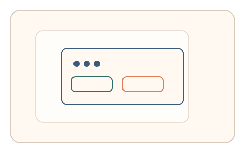

#116
Morphological Analysis - Combination Batches
已扩展
目标意图插问
在操作流程中随机插入与目标相关的微选择，以反应时与路径停顿一致性验证真实性。
概念原文
在操作流程中随机插入与目标相关的微选择，系统比较反应时与路径停顿的任务内一致性。任务结构为随机插入，信号形态为反应时与注意力分布。
利用“意图驱动的快速决策”作为验证信号。
研究背景
意图驱动的快速决策会在路径停顿与反应时中体现。随机插问可检验用户是否保持目标意图，脚本难以在动态上下文中一致应答。
核心机制
- 在操作流程中随机插入微选择题。
- 题目与当前目标意图相关。
- 记录反应时与路径停顿位置。
- 比较任务内一致性与分布。
用户流程
- 步骤 1：用户进行正常操作流程。
- 步骤 2：随机插入微选择并即时响应。
- 步骤 3：系统分析反应时与停顿一致性。
判定信号
反应时分布
真实用户对目标相关问题反应更快。
路径停顿一致性
意图驱动会在停顿位置上形成一致性。
判定逻辑
反应时与停顿一致性需落在人类分布区间；随机或过度稳定判异常。
对抗面
- 脚本快速选择固定答案
- 重放真实用户的响应序列
防御与缓解
- 随机化插问时机与题目形式
- 绑定上下文与目标状态
- 叠加轨迹与停顿信号
可达性与风险
提供可跳过或简化问题，避免对注意力障碍用户造成负担。
- 插问过多影响体验
- 用户分心导致误判
可视化状态
状态 1：正常操作
用户进行目标操作流程。

状态 2：意图插问
随机插入与目标相关的问题。

状态 3：一致判定
比较反应时与停顿一致性。
参考资料
Attention
说明意图驱动的注意力与反应时。
Decision making
说明快速决策与路径停顿关联。